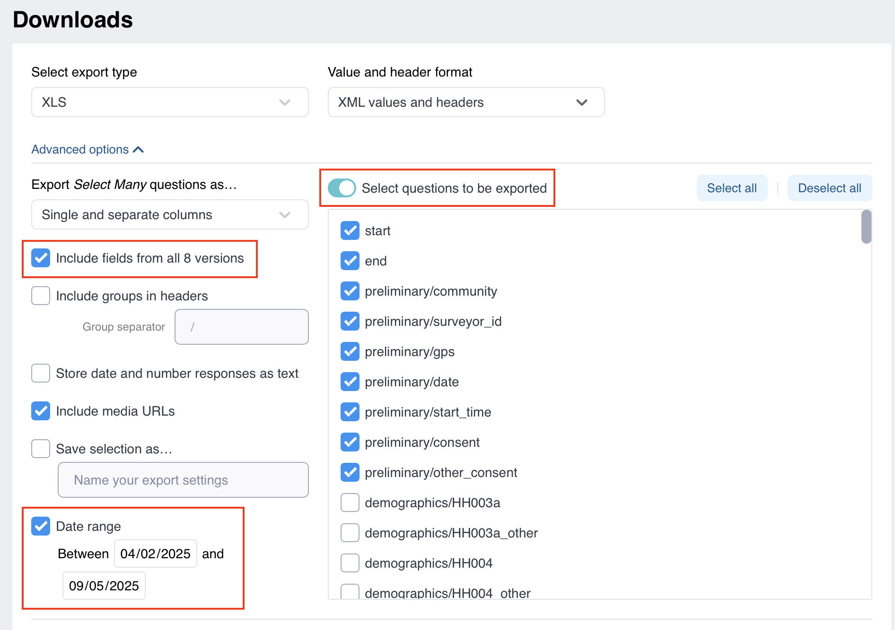
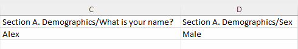

Search the knowledge base, browse our resources, and visit our forum for more detailed information
Last updated: 19 Jan 2026
Advanced options provide greater control and flexibility when downloading and exporting your data. This article will guide you through customizing your data exports, from selecting data fields and handling various question types to setting parameters for different analytical needs.
To learn more about downloading data, including an overview of export types and available formats, see Exporting and downloading your data.
The Export Select Many questions as… option allows you to choose how to export data from Select Many (also called select_multiple) questions. You can choose to export them as:
Export option |
Description |
|---|---|
Single and separate columns |
This default setting exports one column with all selected options from Select Many questions, plus individual columns for each response, as shown below. |
Separate columns |
Each response to Select Many questions will be exported into separate columns. |
Single column |
Responses to Select Many questions will be exported into a single column. |
Note: In the separate columns, a value of '1' indicates the option was selected, while '0' means the respondent did not choose that option.
Advanced export options allow you to refine your data download by including data from all form versions or selecting specific questions to export.
Export setting |
Description |
|---|---|
Include data from all […] versions |
By default, this option is checked. This allows you to download data from all form versions, including deleted questions or choices. If unchecked, only data from the latest deployed form version will be downloaded. |
Select questions to be exported |
To export data from specific questions, enable this option and select the questions to include. |
Date range |
To export data submitted within a specific date range, enable this option and select the start and/or end dates. Date filters are based on submission time and use the UTC time zone. Date submitted on the start and end dates are included in the exports. |

KoboToolbox offers additional data format options to further customize your exports, such as including group names in headers, storing date and number responses as text, or including media URLs.
Export setting |
Description |
|---|---|
Include groups in headers |
Choose this option to add group names to each question header, as shown in the example below.  |
Store date and number responses as text |
By default, Date, Date & Time, Number, and Decimal questions are saved with their corresponding data types when exported to XLS. Check this option if you prefer to export them as text. |
Include media URLs |
If your form collected media (photos, audio, videos, or files), check this option to ensure your exported file includes links to these media files. |
You can save your defined export settings for future use or to generate a synchronous export link for software like PowerBI or Excel.
Export setting |
Description |
|---|---|
Save selection as… |
Check this option and enter a name for your export settings. When you click EXPORT, these settings will be saved and the name will appear in the Apply saved export settings box. |
To use saved export settings, click on the dropdown menu under Apply saved export settings and select the named export settings of your choice.
Did you find what you were looking for? Was the information clear? Was anything missing?
Share your feedback to help us improve this article!
KoboToolbox is maintained by Kobo Inc.